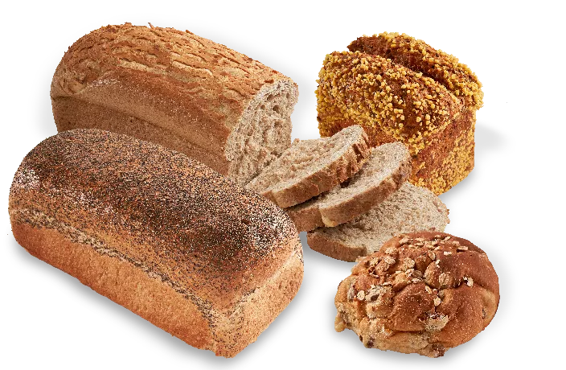
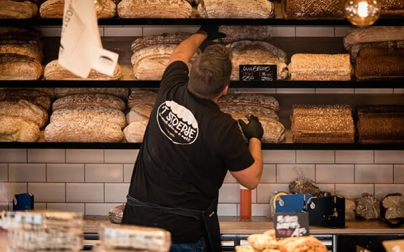

Brood bakken met de gedrevenheid van bakker Faber.
Wat begon in een kleine bakkerij met roggebrood voor de winkel en langs de deur, is nu een bakkerij van formaat. We bakken broodspecialiteiten voor supermarkten en maken brood op maat voor uw eigen merk.

Van bakker Faber tot bakkerij Faber
Passie en ambitie bleken de goede ingrediënten. Met dezelfde gedrevenheid als bakker Faber bakken we nog elke dag.
-
1883
Bakker Faber, een gedreven vakman, bakt dagelijks in zijn kleine bakkerij. Specialiteit: roggebrood, verkocht in de eigen winkel en tijdens het venten langs de deur.
-
Rond 1960
Bakker Faber gaat met zijn tijd mee en levert aan de opkomende supermarkten. De bakkerij groeit mee.
-
1988
Met de blik op de toekomst opent een compleet nieuwe bakkerij van formaat.
-
1997
De bakkerij gaat verder onder de naam Bakkerij Faber. Een naam waar we trots op zijn.
-
2022
Bakkerij Faber wordt onderdeel van Market Food Group, het bedrijf achter ’t Stoepje en Le Perron. Ons brood vindt zijn weg naar vele duizenden mensen via verschillende supermarkten.
Brood voor de supermarkt. En voor uw eigen merk.
Broodspecialiteiten
Al sinds rond 1960 leveren we aan supermarkten. Vandaag bakken we de lekkerste broodspecialiteiten voor vele duizenden consumenten.
Private label op maat
Onderscheidend, eigen en ambachtelijk. Desgewenst biologisch of vegan. We passen de receptuur aan op uw wensen, voor retail of een compleet horecaconcept.
Twee bakkerijen achter ons
Binnen Market Food Group bakken we ook in Spakenburg: een semi-ambachtelijke bakkerij en een volledig biologische bakkerij, waar het deeg met de hand wordt gekneed.

Op zoek naar brood dat bij uw merk past?
Vertel ons wat u zoekt. We passen de receptuur aan op uw wensen, zodat u zich onderscheidt met eigen brood.
Komt u lossen of langs?
- Geopend
- Maandag tot en met zondag, 24 uur per dag
- Telefoon
- 0528 266 751
4,2 uit 5, op basis van 91 Google-reviews
“Super goed adres om te lossen! Nooit wachten echt top!”
“Lossen bij een Dc waar ze je gewoon vriendelijk behandelen.dat valt op tegenwoordig.”
“Leuk bedrijf vriendelijke mensen mag er graag werken”